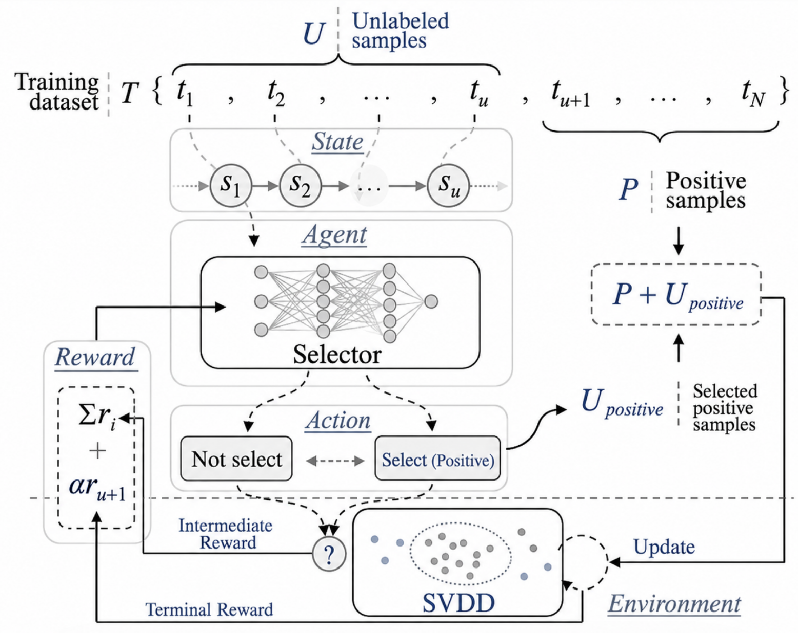
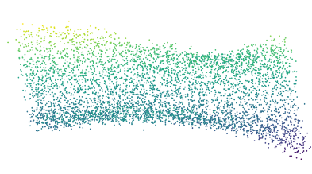
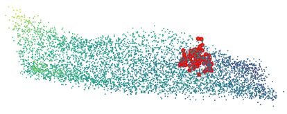
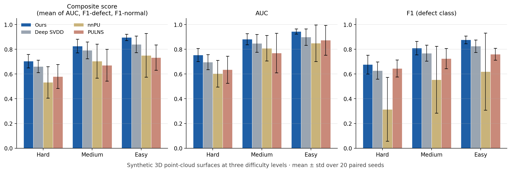

Back to Projects
Label-Efficient Surface Defect Detection with Reinforcement Learning

The Problem
- In manufacturing inspection, defects are rare and expensive to label, while normal parts are abundant.
- We frame defect detection as Positive-Unlabeled (PU) learning: a small set of confirmed normal samples plus a large unlabeled pool that mixes normal and defective parts.
- Classical PU methods either rely on an estimate of the defect ratio (class prior), which is hard to obtain on the shop floor, or on fixed selection rules that cannot adapt.
Key Contributions
- Combined a one-class Deep SVDD model, which learns a compact boundary around normal data, with a reinforcement-learning selector that learns which unlabeled samples to promote as reliable normal samples.
- The selector and the detector improve together: the selector is rewarded by the detector’s feedback, so the selection policy is learned rather than hand-crafted.
- Requires no estimate of the defect ratio, removing a fragile step of classical PU learning.
- Applied to 3D point clouds of manufactured surfaces, separating normal surfaces from defective ones.
- On synthetic 3D point-cloud surfaces at three difficulty levels (20 paired seeds each), ranked first on every dataset and metric against Deep SVDD, nnPU, and PULNS, and was significantly better in 18/18 paired Wilcoxon comparisons.
- On the easiest setting, improved the composite score by +0.055 over Deep SVDD with 2.7× lower variance across runs.
- Ablation: removing either the RL selector or the top-k selection step lowers the composite score by about 0.11 — both are essential to the method.


Results on Synthetic Point-Cloud Data

Mean ± standard deviation over 20 paired seeds. The composite score is the mean of AUC, F1 on the defect class, and F1 on the normal class. Our method is best at every difficulty level and has the smallest spread across runs.
Why It Matters
- Inspection systems can start detecting defects before a large labeled defect library exists, and keep improving as new samples arrive.
- The same idea extends to image-based surface inspection, where defect classes are rare and labeling requires expert time.
Python
PyTorch
Deep SVDD
Reinforcement Learning
PU Learning
3D Point Clouds
Manuscript in preparation — co-first author